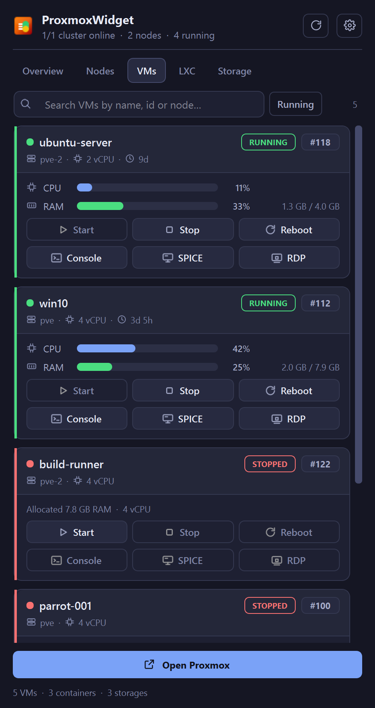
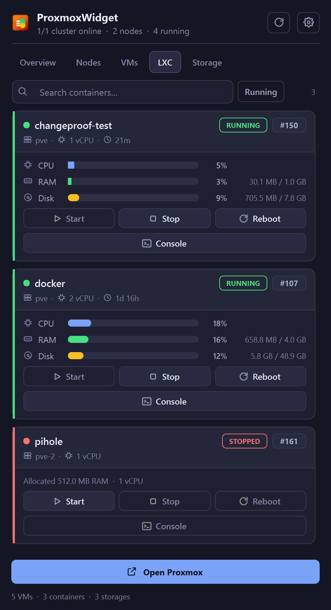
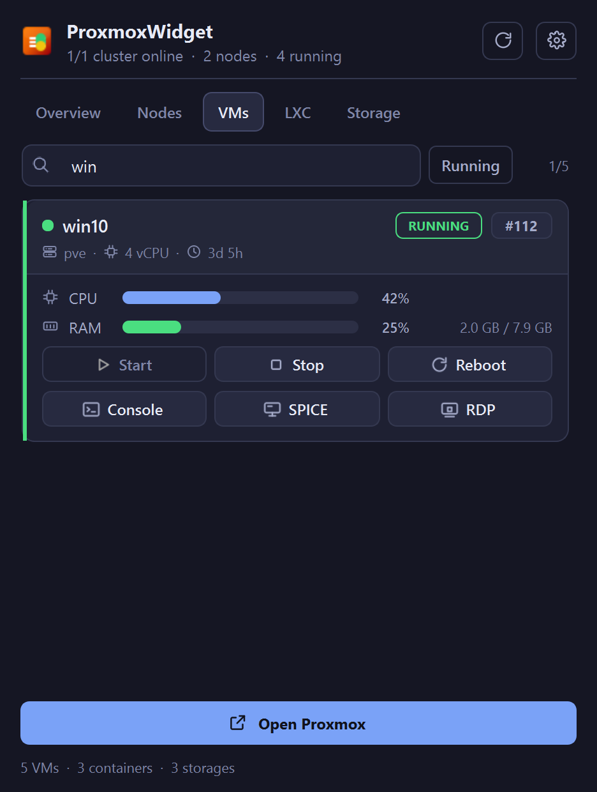
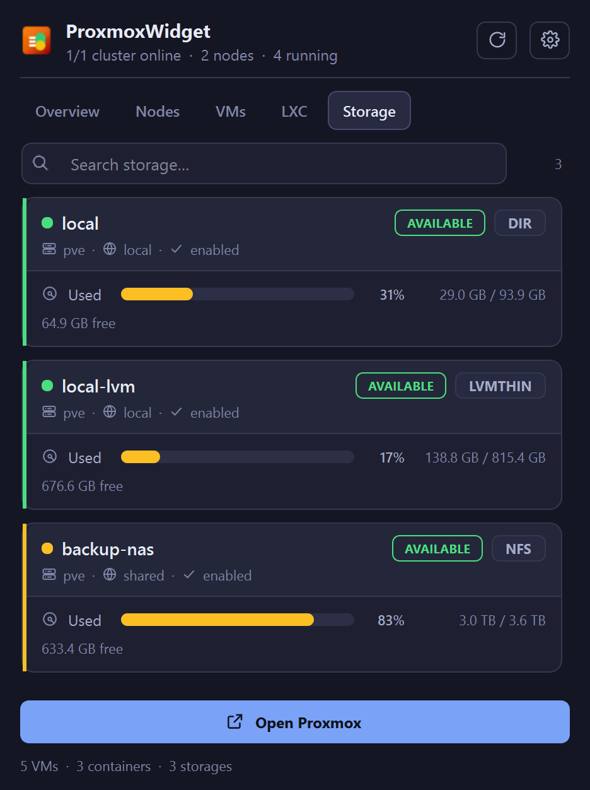
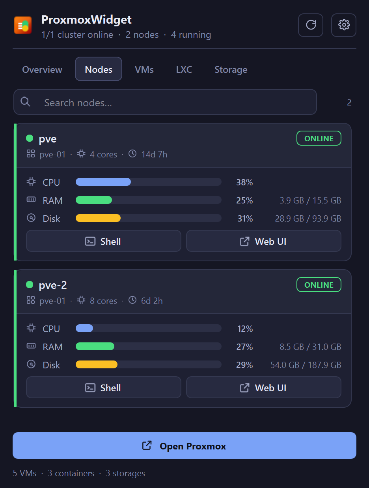
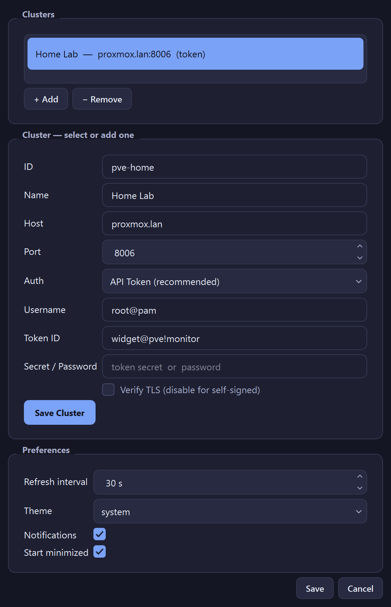

Live nodes and guests
CPU, memory and disk for every node, VM and LXC container, with uptime and vCPU counts on the same line.
Nodes, VMs, containers and storage at a glance — no browser tab, no dashboard to keep open.
Search every tab, start and stop guests, and jump straight into a noVNC, SPICE or RDP session. API-token auth, auto-refresh, nothing phones home.

One popup off the tray icon, refreshed on a timer you choose.
CPU, memory and disk for every node, VM and LXC container, with uptime and vCPU counts on the same line.
Filter by name, VMID, node or status. A Running toggle hides everything that is powered off.
noVNC for any guest, SPICE handed to remote-viewer, and RDP straight to the address the guest agent reports.
Power actions run against the API and the card shows a progress bar until the guest reaches the state you asked for.
Secrets live in your OS keyring, never in a config file. A read-only token is enough for monitoring.
Add as many endpoints as you run. Everything merges into one list, and the tray icon flags a cluster that drops offline.
Real captures from the app, not mockups.






No agent on the server, no database, no container to deploy.
Run the Setup.exe, or unzip the portable build anywhere. The app starts in the tray.
Tray, then Settings, then Add. Host, port 8006, and an API token ID plus secret.
Nodes, guests and storage appear and refresh on their own. Open Proxmox jumps to the web UI.